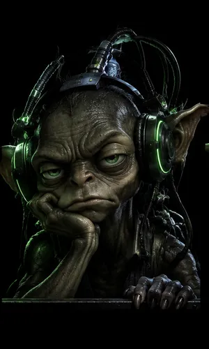
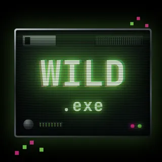

Mascot
Specimen #001
A lab goblin in a tank next to the reels, with five moods from bored to manic and a terminal speech bubble that types out its commentary.
An original 5×4, 20-line slot built for Stake Engine, where the interface corrupts as you win. A project about learning how slots are built on a real casino platform: its Python math SDK and its Svelte + PIXI frontend.
Corrupted software, a dopamine loop, degen internet culture. A slot for Stake Engine — the platform where independent creators publish casino games for Stake — built on one idea: the interface degrades as you win. A DOPAMINE METER climbs from 0 to 100 and the machine goes from calm green to red alarms, glitches and chaos.

A lab goblin in a tank next to the reels, with five moods from bored to manic and a terminal speech bubble that types out its commentary.
Lab rat, eye, brain, green candle, 99+, doomscroll, ??? file, injector, stim can, WILD.exe and DO NOT PRESS — built as CSS art and rasterised with headless Chrome.

The wild glitches when it lands. The scatter is a red button you are told not to press. Three of them and you’re in the bonus.
Every win feeds the DOPAMINE METER; every spin bleeds it. Above 75% the frame turns red, the overlay flickers and the spin button changes from STIMULATE to MORE to DO IT.
DOPAMINE OVERLOAD: 8, 12 or 15 free spins with multiplier wilds from ×2 to ×50, an intro panel, a SESSION REPORT outro and a win cap of 5000×.
Python Math SDK: symbol strips, paytable, bonus logic and a Rust optimiser tuned to exactly 0.965 RTP. The engine serves pre-simulated books, not live RNG.
Web SDK (Svelte 5 + PIXI 8) ships a mining theme. Almost all of it was replaced with hand-built HTML overlays: machine frame with an alarm sequence, control bar, bonus panels, goblin rig.
How slots are built for Stake Engine: how the engine wants its math delivered, and how far its PIXI frontend can be bent with plain HTML on top of the canvas.
Runs end to end in the storybook, including a $5,000 win-cap book. Still to do: sounds, the 8×8 board growth in OVERLOAD, 100k simulations before submission.